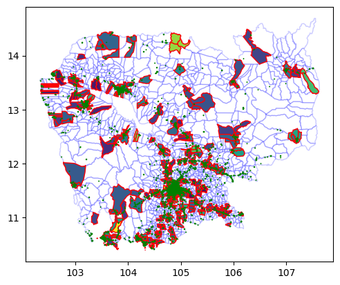
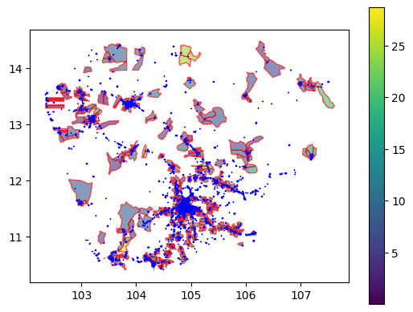
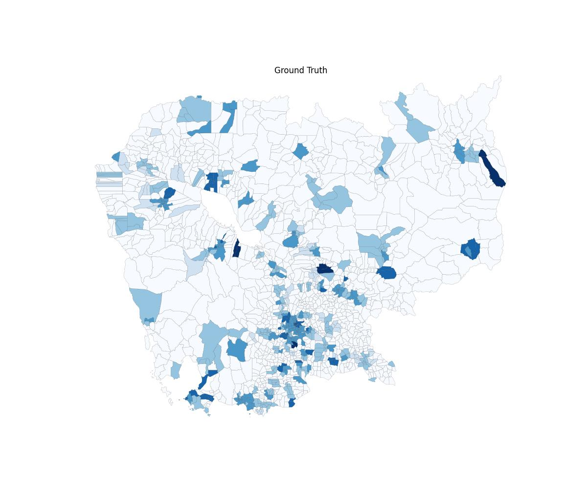
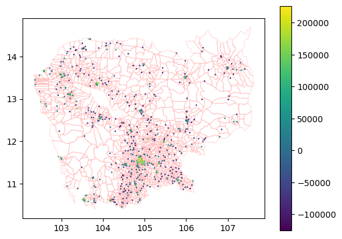

%reload_ext autoreload
%autoreload 2Explore Ookla Data (Cambodia)
import pandas as pd
import geopandas as gpdimport povertymapping.ookla_data_proc as ooklaimport sysookla_config = dict(
save_path="../test_data/real_outputs/ookla_kh",
repo_path="../data/SVII_PH_KH_MM_TL",
data_dir="kh",
country="kh",
ookla_folder="ookla_kh",
hdx_folder="hdx_kh",
dhs_folder="dhs_kh",
dhs_geo_zip_folder="KHGE71FL",
dhs_zip_folder="KHHR73DT",
crs="4683",
ookla_feature="avg_d_mbps",
boundary_file="khm_admbnda_adm3_gov_20181004",
year="2019",
quarter="2",
sample=False,
random_sample=False,
no_samples=60,
random_seed=42,
clust_rad=2000,
plot_ookla_features=True,
adm_level=3,
use_pcode=True,
shape_label='ADM3_PCODE',
bins=6,
show_legend=False,
)
# you can also create a yaml file or json file
# and load it in.from pathlib import Path# uncomment and run the following to clear out the preprocessed files
!rm -rf {ookla_config['save_path']}
!mkdir -p {ookla_config['save_path']}cluster_coords_path = Path(ookla_config['save_path'])/'..'/ookla_config['dhs_folder']/f"{ookla_config['dhs_geo_zip_folder']}_cluster_coords.csv"!cp {cluster_coords_path} {ookla_config['save_path']}/.%%time
ookla.process_ookla_data(ookla_config)Adding buffer geometry...100%|█████████████████████████████████████████████████████████████████████████████████| 611/611 [00:11<00:00, 51.19it/s]
/home/butchtm/work/povmap/unicef-ai4d-poverty-mapping/povertymapping/utils/data_utils.py:449: FutureWarning: The default value of numeric_only in DataFrameGroupBy.mean is deprecated. In a future version, numeric_only will default to False. Either specify numeric_only or select only columns which should be valid for the function.
geometry_and_cluster_features.groupby(group_indices).mean().reset_index()
/home/butchtm/work/povmap/unicef-ai4d-poverty-mapping/env/lib/python3.9/site-packages/geopandas/io/file.py:362: FutureWarning: pandas.Int64Index is deprecated and will be removed from pandas in a future version. Use pandas.Index with the appropriate dtype instead.
pd.Int64Index,CPU times: user 14.4 s, sys: 1.28 s, total: 15.7 s
Wall time: 14.9 s<Figure size 1200x1000 with 0 Axes>Check that the preprocessed files have been created
ookla_df_path = Path(ookla_config['save_path'])/f"{ookla_config['country']}_{ookla_config['year']}_{ookla_config['quarter']}_{ookla_config['ookla_feature']}.csv"ookla_df = pd.read_csv(ookla_df_path)len(ookla_df)339ookla_df.head()| Unnamed: 0 | DHSID | avg_d_mbps | |
|---|---|---|---|
| 0 | 0 | KH201400000001 | 6.662091 |
| 1 | 1 | KH201400000003 | 3.840000 |
| 2 | 2 | KH201400000005 | 5.450905 |
| 3 | 3 | KH201400000012 | 1.844000 |
| 4 | 4 | KH201400000015 | 8.828900 |
use_pcode = ookla_config["use_pcode"]
adm_level = ookla_config["adm_level"]
if use_pcode:
aggregate = f"pcode_adm{adm_level}"
else:
aggregate = ookla_config["shape_label"]ookla_by_adm_gdf_path = Path(ookla_config['save_path'])/f"{ookla_config['country']}_{ookla_config['year']}_{ookla_config['quarter']}_{ookla_config['ookla_feature']}_by_{aggregate.lower()}.geojson"ookla_by_adm_gdf = gpd.read_file(ookla_by_adm_gdf_path)len(ookla_by_adm_gdf)1633ookla_by_adm_gdf.head()| ADM3_PCODE | ADM3_EN | DHSYEAR | DHSCLUST | ADM1FIPS | ADM1FIPSNA | ADM1SALBNA | ADM1SALBCO | ADM1DHS | DHSREGCO | LATNUM | LONGNUM | ALT_GPS | ALT_DEM | avg_d_mbps | index_right | Shape_Leng | Shape_Area | geometry | |
|---|---|---|---|---|---|---|---|---|---|---|---|---|---|---|---|---|---|---|---|
| 0 | KH110202 | None | NaN | NaN | None | None | None | None | NaN | NaN | NaN | NaN | NaN | NaN | NaN | NaN | NaN | NaN | POLYGON ((107.33712 13.31783, 107.33889 13.315... |
| 1 | KH060309 | Achar Leak | 2014.0 | 141.857143 | None | None | None | None | 6.0 | 5.0 | 12.718982 | 104.900968 | 9999.0 | 14.142857 | 10.264405 | 1.0 | 0.094650 | 0.000522 | POLYGON ((104.91792 12.74082, 104.91652 12.737... |
| 2 | KH160603 | None | NaN | NaN | None | None | None | None | NaN | NaN | NaN | NaN | NaN | NaN | NaN | NaN | NaN | NaN | POLYGON ((107.13571 13.77648, 107.13870 13.774... |
| 3 | KH040801 | None | NaN | NaN | None | None | None | None | NaN | NaN | NaN | NaN | NaN | NaN | NaN | NaN | NaN | NaN | POLYGON ((104.62409 12.05304, 104.62152 12.050... |
| 4 | KH080601 | Akreiy Ksatr | 2014.0 | 250.333333 | None | None | None | None | 12.0 | 8.0 | 11.560091 | 104.936259 | 9999.0 | 15.333333 | 16.086851 | 4.0 | 0.159472 | 0.001303 | POLYGON ((104.98247 11.58139, 104.98229 11.576... |
len(ookla_by_adm_gdf)1633ookla_by_adm_gdf.avg_d_mbps.isna().sum()1054if use_pcode:
group_indices = [f"ADM{adm_level}_PCODE", f"ADM{adm_level}_EN"]
else:
group_indices = [ookla_config["shape_label"]]with_data = ookla_by_adm_gdf[ookla_by_adm_gdf.avg_d_mbps.notna()][[*group_indices,'DHSCLUST',ookla_config['ookla_feature'],'geometry']]
with_data.head()| ADM3_PCODE | ADM3_EN | DHSCLUST | avg_d_mbps | geometry | |
|---|---|---|---|---|---|
| 1 | KH060309 | Achar Leak | 141.857143 | 10.264405 | POLYGON ((104.91792 12.74082, 104.91652 12.737... |
| 4 | KH080601 | Akreiy Ksatr | 250.333333 | 16.086851 | POLYGON ((104.98247 11.58139, 104.98229 11.576... |
| 6 | KH030601 | Ampil | 39.000000 | 13.343667 | POLYGON ((105.44427 12.00596, 105.44409 11.999... |
| 7 | KH171011 | Ampil | 330.000000 | 7.016000 | POLYGON ((103.97251 13.42729, 103.97831 13.426... |
| 13 | KH040501 | Ampil Tuek | 80.000000 | 4.304000 | POLYGON ((104.88312 12.06738, 104.88672 12.062... |
len(with_data)579orig_ookla_gdf_path = Path(ookla_config['repo_path'])/ookla_config['data_dir']/ookla_config['ookla_folder']/f"{ookla_config['country']}_{ookla_config['year']}_{ookla_config['quarter']}_ookla.geojson"orig_ookla_gdf = gpd.read_file(orig_ookla_gdf_path)orig_ookla_gdf.head()| quadkey | avg_d_kbps | avg_u_kbps | avg_lat_ms | tests | devices | index_right | Shape_Leng | Shape_Area | ADM3_EN | ... | ADM2_EN | ADM2_PCODE | ADM1_EN | ADM1_PCODE | ADM0_EN | ADM0_PCODE | date | validOn | validTo | geometry | |
|---|---|---|---|---|---|---|---|---|---|---|---|---|---|---|---|---|---|---|---|---|---|
| 0 | 1322123031332333 | 8093 | 9749 | 19 | 24 | 2 | 1577 | 0.830786 | 0.037343 | Tum Ring | ... | Sandan | KH0606 | Kampong Thom | KH06 | Cambodia | KH | 2014-10-14 | 2018-10-04 | None | POLYGON ((105.41793 12.90459, 105.42342 12.904... |
| 1 | 1322123031333222 | 8503 | 9822 | 52 | 2 | 2 | 1577 | 0.830786 | 0.037343 | Tum Ring | ... | Sandan | KH0606 | Kampong Thom | KH06 | Cambodia | KH | 2014-10-14 | 2018-10-04 | None | POLYGON ((105.42342 12.90459, 105.42891 12.904... |
| 2 | 1322123032332302 | 3026 | 4486 | 44 | 1 | 1 | 1441 | 0.433017 | 0.004314 | Tang Krasang | ... | Santuk | KH0607 | Kampong Thom | KH06 | Cambodia | KH | 2014-10-14 | 2018-10-04 | None | POLYGON ((105.04988 12.57238, 105.05537 12.572... |
| 3 | 1322123032332203 | 10902 | 11395 | 10 | 2 | 1 | 1441 | 0.433017 | 0.004314 | Tang Krasang | ... | Santuk | KH0607 | Kampong Thom | KH06 | Cambodia | KH | 2014-10-14 | 2018-10-04 | None | POLYGON ((105.03340 12.57238, 105.03889 12.572... |
| 4 | 1322123032332212 | 3855 | 6334 | 20 | 10 | 3 | 1441 | 0.433017 | 0.004314 | Tang Krasang | ... | Santuk | KH0607 | Kampong Thom | KH06 | Cambodia | KH | 2014-10-14 | 2018-10-04 | None | POLYGON ((105.03889 12.57238, 105.04438 12.572... |
5 rows × 24 columns
orig_ookla_gdf["avg_d_mbps"] = orig_ookla_gdf["avg_d_kbps"]/1000
orig_ookla_gdf["avg_u_mbps"] = orig_ookla_gdf["avg_u_kbps"]/1000import matplotlib.pyplot as pltax = plt.axes()
ax = ookla_by_adm_gdf.plot(facecolor='none',ax=ax,edgecolor='blue', alpha=0.2)
ax = with_data.plot(column='avg_d_mbps',edgecolor='red', ax=ax)
ax = orig_ookla_gdf.plot(column='avg_d_mbps',edgecolor='green', ax=ax)
ax = plt.axes()
ax = with_data.plot(column='avg_d_mbps',edgecolor='red', ax=ax, legend=True, alpha=0.6)
ax = orig_ookla_gdf.plot(column='avg_d_mbps',edgecolor='blue', ax=ax)
img_path = (Path(ookla_config['save_path'])/f'{ookla_config["boundary_file"]}_{ookla_config["ookla_feature"]}.jpeg').as_posix(); img_path'../test_data/real_outputs/ookla_kh/khm_admbnda_adm3_gov_20181004_avg_d_mbps.jpeg'from PIL import Imageimg = Image.open(img_path); img
dhs_by_cluster_path = Path(ookla_config['save_path'])/'..'/ookla_config['dhs_folder']/f"{ookla_config['dhs_zip_folder']}_{ookla_config['dhs_geo_zip_folder']}_by_cluster.geojson"dhs_by_cluster = gpd.read_file(dhs_by_cluster_path)len(dhs_by_cluster)611dhs_by_cluster.columns.valuesarray(['DHSCLUST', 'Wealth Index', 'DHSID', 'DHSCC', 'DHSYEAR', 'CCFIPS',
'ADM1FIPS', 'ADM1FIPSNA', 'ADM1SALBNA', 'ADM1SALBCO', 'ADM1DHS',
'ADM1NAME', 'DHSREGCO', 'DHSREGNA', 'SOURCE', 'URBAN_RURA',
'LATNUM', 'LONGNUM', 'ALT_GPS', 'ALT_DEM', 'DATUM', 'geometry'],
dtype=object)dhs_data = dhs_by_cluster[["DHSCLUST","DHSID","Wealth Index","geometry","LATNUM","LONGNUM"]].copy()
dhs_data.head()| DHSCLUST | DHSID | Wealth Index | geometry | LATNUM | LONGNUM | |
|---|---|---|---|---|---|---|
| 0 | 1 | KH201400000001 | -7443.192308 | POINT (103.02839 13.51868) | 13.518676 | 103.028394 |
| 1 | 2 | KH201400000002 | 2622.678571 | POINT (102.95385 13.39840) | 13.398398 | 102.953852 |
| 2 | 3 | KH201400000003 | 22167.920000 | POINT (102.99600 13.50345) | 13.503451 | 102.996001 |
| 3 | 4 | KH201400000004 | 32241.826087 | POINT (103.07142 13.54940) | 13.549399 | 103.071416 |
| 4 | 5 | KH201400000005 | 154111.500000 | POINT (103.02899 13.53887) | 13.538865 | 103.028993 |
dhs_data.crs<Geographic 2D CRS: EPSG:4326>
Name: WGS 84
Axis Info [ellipsoidal]:
- Lat[north]: Geodetic latitude (degree)
- Lon[east]: Geodetic longitude (degree)
Area of Use:
- name: World.
- bounds: (-180.0, -90.0, 180.0, 90.0)
Datum: World Geodetic System 1984 ensemble
- Ellipsoid: WGS 84
- Prime Meridian: Greenwichfrom povertymapping.utils.data_utils import add_buffer_geomadd_buffer_geom(dhs_data, r=ookla_config['clust_rad'])Adding buffer geometry...100%|█████████████████████████████████████████████████████████████████████████████████| 611/611 [00:11<00:00, 52.95it/s]ax = plt.axes()
ax= ookla_by_adm_gdf.plot(facecolor='none',ax=ax,edgecolor='red', alpha=0.1)
ax = dhs_data.plot(column="Wealth Index", ax=ax, legend=True)